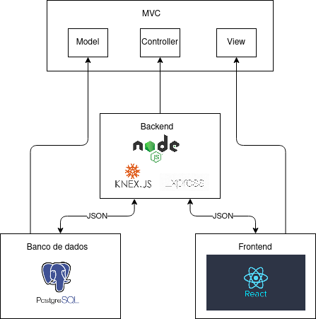
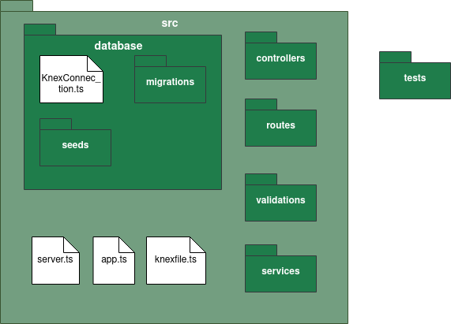
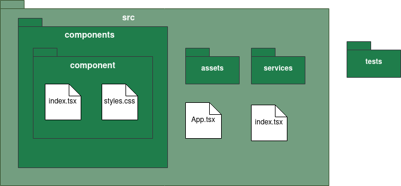
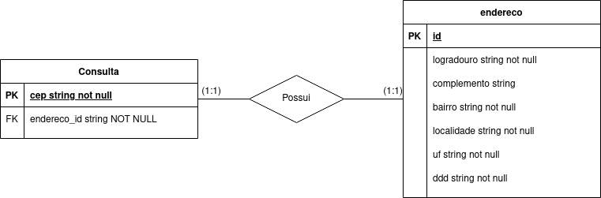

Documento de arquitetura
Objetivos
Este artefato tem o objetivo de fornecer uma visão geral da arquitetura do DiscoverCEP. Apresenta várias visualizações de arquitetura para descrever os diferentes aspectos do sistema.
Escopo
O DiscorverCEP é uma aplicação web que proporciona a descoberta de endereços a partir do CEP.
Representação arquitetural
Implementação
O modelo de arquitetura proposto no projeto é um modelo multicamadas, sendo composto por três camadas principais:
- Visão: camada em que os dados são visualizados a partir de uma interface gráfica implementada.
- Controladora: camada em que há o tratamento e interpretação dos eventos gerados por dispositivos de entrada.
- Modelo: camada que há persistência dos dados, sendo composta pelo banco de dados.
A comunicação entre as camadas é feita pelo modelo de arquitetura cliente-servidor. O servidor é responsável pela camada intermediária (Controladora), sendo responsável por lidar como a camada de persistência(Modelo), que fornece os dados para a manipulação, e com a camada de visualização (Visão), que representa por meio da interface gráfica os dados manipulados, no qual são requisitados por meio do protocolo de comunicação ‘http’ com as outras camadas, e é utilizado JSON como a estrutura das informações sendo transmitidas. O usuário neste modelo realiza as requisições interagindo com a interface gráfica.

-
Node.js: Pode ser definido com um ambiente de execução Javascript server-side, sendo possível rodar uma aplicação standalone em uma máquina, não dependendo de um browser para a execução.
-
ReactJS: Biblioteca JavaScript com foco em criar interfaces de usuários em páginas web.
-
Express JS: Framework para Node.js, utilizado no back-end para o gerenciamento de rotas, middleware e de outras funções, facilitando a criação de API 's. Sendo responsável por realizar a conexão entre as camadas de persistência e de controle com a camada de visão.
-
Knex: É um construtor de requisições para banco de dados com o modelo relacional(SQL).
-
PostgreSQL: O banco de dados escolhido para o projeto.
Back-end
Rotas do backend
/v1/consulta/:cep
Estrutura de pacotes do back-end.

src
Contém os arquivos de código fonte do back-end.
src/knexfile.ts
Contém as configurações da conexão entre o banco de dados e a aplicação.
src/server.ts
Habilitação das variáveis de ambiente, e ativação do back-end em uma porta. O "início" da aplicação.
src/app.ts
Habilitação de middlewares padrão à todas as rotas da aplicação, além da criação de rotas bases para os end-points.
src/database
Contém as lógicas de interação com o banco de dados, além disso a conexão com o banco de dados no arquivo KnexConnection.ts. Os código fonte dessa pasta utilizam o Knex para essa interação.
src/database/migrations
Contém as lógicas de criação e exclusão de tabelas no banco dados de dados, chamadas de migrations. A ativação dessas tabelas é feita por meio do terminal utilizando yarn knex migrate:latest, foi criado um script no yarn que simplifica o comando yarn knex:migrate, ainda as migrations são rodadas automaticamente ao subir os contêineres com o docker-compose.
src/database/seeds
Contém arquivos para população inicial do banco, utilizado principalmente para testes. A ativação dessas tabelas é feita por meio do terminal utilizando yarn knex seed:run, foi criado um script no yarn que simplifica o comando yarn knex:seed. As seeds são inseridas automaticamente ao subir o container.
src/controllers
Contém as lógicas de inserção e atualização de dados em tabelas, além de certas validações de dados simples. Os erros gerados nas controllers são tanto erros relacionados a essas validações como erros de operações no banco de dados.
src/routes
Criação das rotas de cada end-point, a partir da rota são chamadas as controllers requiridas, além dos middlewares de validação.
src/validations
Contém os middlewares de validação de requisição e de autorização.
tests
Contém os testes do back-end.
Front-end
Estrutura de pacotes front-end.

src
Contém os arquivos de código fonte do front-end.
src/index.tsx
Página que realiza a inserção do javascript no elemento raiz do HTML, o "início" da aplicação.
src/App.tsx
Contém o elemento de roteamento da react-router-dom e os provedores de contexto mais externos ao código.
src/services
Concentra as lógicas de acesso às APIs tanto do back-end quanto APIs externas.
src/contexts
Contém os contextos de informações utilizadas em múltiplas páginas, como por exemplo, informações básicas de um usuário logado.
src/tools
Contém lógicas simples que auxiliam a formatar dados, como por exemplos, conversores de datas em string.
src/assets
Contém imagens e ícones utilizados na aplicação além de estilos CSS globais.
src/routes
Contém lógicas relacionadas ao roteamento da aplicação, selecionando qual component inserir de acordo com o URL, e também lida com a questão de autenticação.
src/components
Contém os componentes React criados.
src/components/Layouts
Contém componentes que formam layouts de páginas.
src/components/IndividualComponents
Contém componentes individuais que não formam um layout
src/components/Forms
Contém componentes de formulários, utilizando o Formik. Diferente de outros componentes há um arquivo a mais nas pasta dos componentes, que é o arquivo formSettings.ts, que contém a lógica de estado, validação e submit dos formulários Formik.
Banco de dados
Modelagem da estrutura do banco de dados

Metas e restrições arquiteturais
Metas
- Desacoplamento: A separação do software em duas frentes: interface de usuário (front-end) e API (back-end), facilitará para a equipe de desenvolvimento a divisão de tarefas necessárias para a construção do software. Além disso, permite escolher as melhores soluções tecnológicas para a implementação de cada frente. Além disso, no front-end deve-se priorizar a componentização.
Qualidade
Na interface de usuário, a utilização do React permitirá que o desenvolvimento seja realizado de forma eficiente e componentizado, com facilidade de integração com outras bibliotecas e serviços.
No back-end, deve-se garantir a separação do acesso ao banco de dados de outras lógicas associadas ao backend.
Haverá a utilização do Sonar Cloud para avaliação da qualidade de código além da utilização do CodeCov para avaliação da cobertura de código, ambos dentro da pipeline de CI utlizando o github actions.
Histórico de versão
| Data | Versão | Descrição | Autor |
|---|---|---|---|
| 20/05/2021 | 0.1 | Criação do documento | Júlio César Schneider Martins |
| 24/05/2021 | 1.0 | Finalização do documento | Júlio César Schneider Martins |